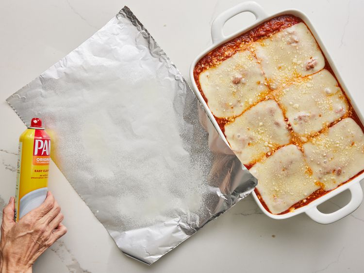

Home
A lasagna recipe

The best lasagna
The ingredients:
1 pound sweet Italian sausage
¾ pound lean ground beef
½ cup minced onion
2 cloves garlic, crushed
1 (28 ounce) can crushed tomatoes
2 (6.5 ounce) cans canned tomato sauce
2 (6 ounce) cans tomato paste
½ cup water
2 tablespoons white sugar
4 tablespoons chopped fresh parsley, divided
1 ½ teaspoons dried basil leaves
1 ½ teaspoons salt, divided, or to taste
1 teaspoon Italian seasoning
½ teaspoon fennel seeds
¼ teaspoon ground black pepper
12 lasagna noodles
16 ounces ricotta cheese
1 egg
¾ pound mozzarella cheese, sliced
¾ cup grated Parmesan cheese
Steps:
Step 1: Gather all your ingredients.
Step 2: Cook sausage, ground beef, chopped onion, and minced garlic in a Dutch oven over medium heat until well browned.
Step 3: Stir in crushed tomatoes, tomato sauce, tomato paste, and water. Season with sugar, 2 tablespoons parsley, basil, 1 teaspoon salt, Italian seasoning, fennel seeds, and pepper. Simmer, covered, for about 1 ½ hours, stirring occasionally.
Step 4: Bring a large pot of lightly salted water to a boil. Cook lasagna noodles for 8 to 10 minutes. Drain and rinse with cold water.
Step 5: In a mixing bowl, combine ricotta cheese with egg, remaining 2 tablespoons parsley, and 1/2 teaspoon salt.
Step 6: Preheat the oven to 375°F (190°C).
Step 7: To assemble:
Spread 1 ½ cups of meat sauce in the bottom of a 9x13-inch baking dish.
Arrange 6 noodles lengthwise over meat sauce, overlapping slightly.
Spread with 1/2 of the ricotta mixture.
Top with 1/3 of the mozzarella cheese slices.
Spoon 1 ½ cups meat sauce over mozzarella.
Sprinkle with 1/4 cup Parmesan cheese.
Step 8: Repeat the layers. Top with remaining mozzarella and Parmesan cheese. Cover with foil — spray the foil with cooking spray or make sure it doesn’t touch the cheese.
Step 9: Bake for 25 minutes. Remove the foil and bake for another 25 minutes.
Step 10: Let the lasagna rest for 15 minutes before serving.